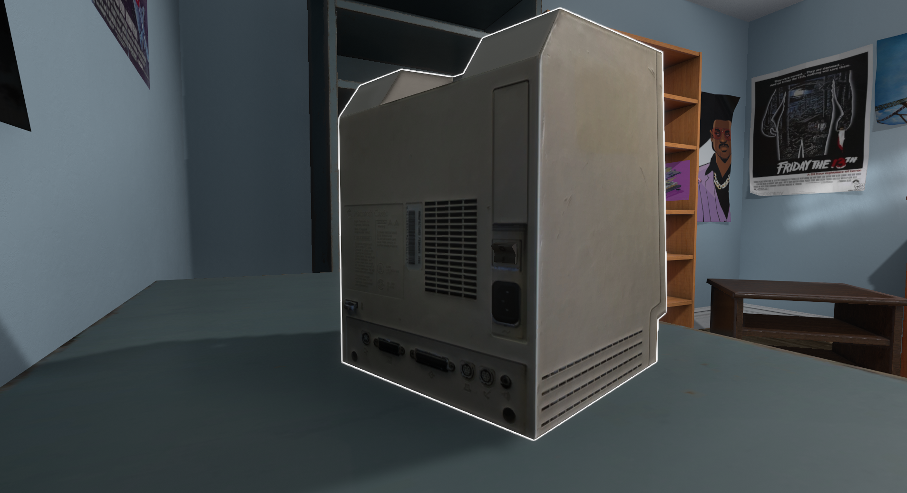
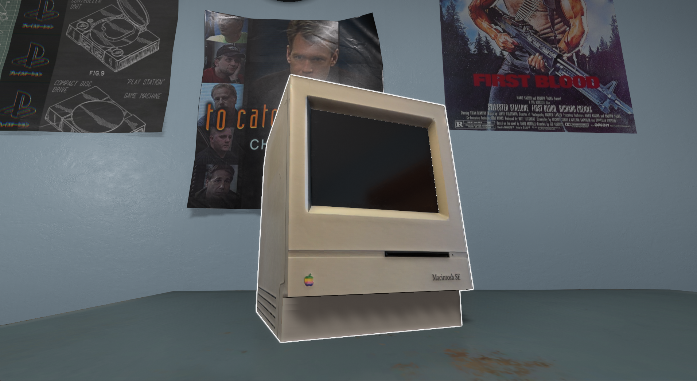
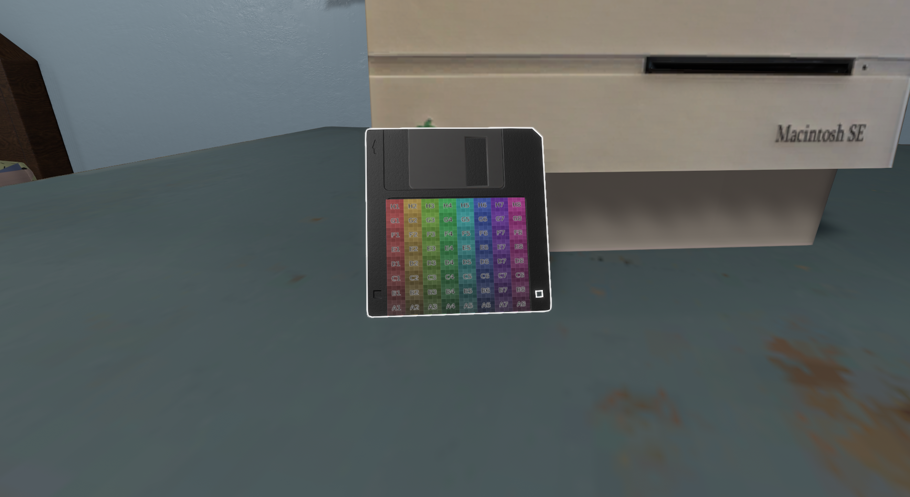
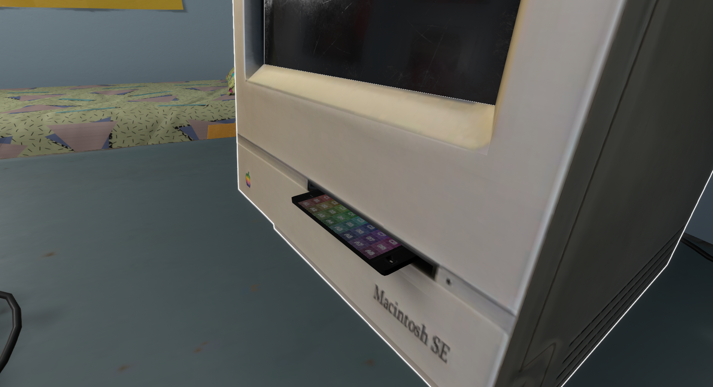
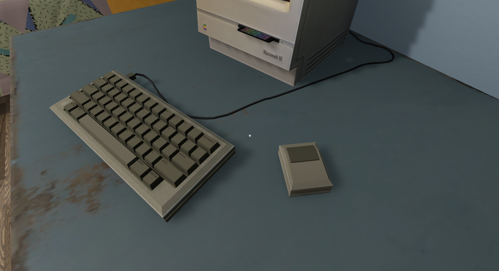

Version: 1.03
Simple Macintosh SE I made when wanting to try a system and screen in one, worked out pretty well, Also comes with keyboard and mouse which can be connected to the Macintosh, but due to mod limitations you can only connect one at a time ;(, also all models are low poly meaning you should have a very minor performance hit if one at all.
     Download